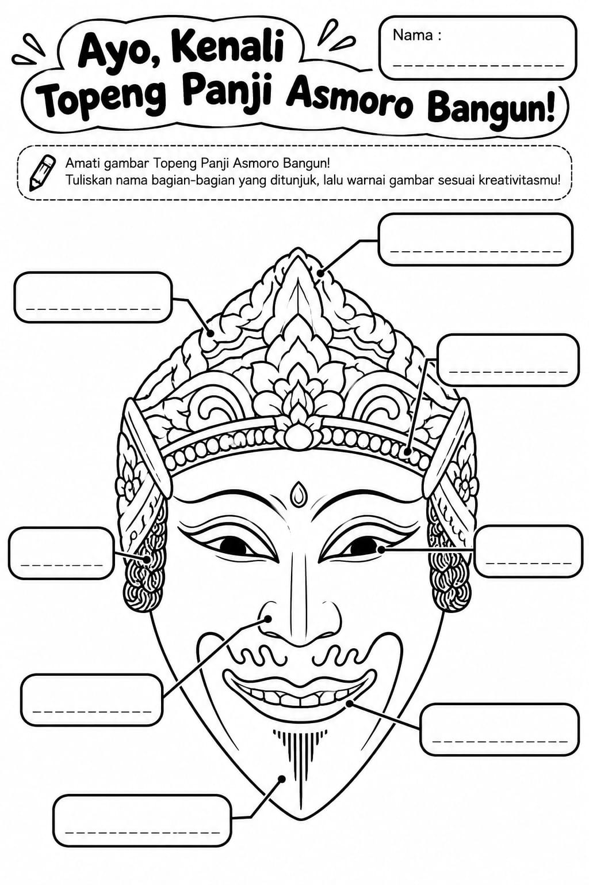

Lembar kerjaku

Cara mewarnai ✨
Pilih warna, lalu ketuk bagian putih gambar dengan Isi Bidang. Pilih Kuas dan geser jari atau mouse untuk mewarnai bebas; atur ukurannya dengan penggeser. Pilih Penghapus untuk menghapus warna. Gunakan Undo atau Redo jika perlu, lalu tekan Unduh PNG untuk menyimpan hasil. Nama dan warna juga tersimpan otomatis di perangkat ini.